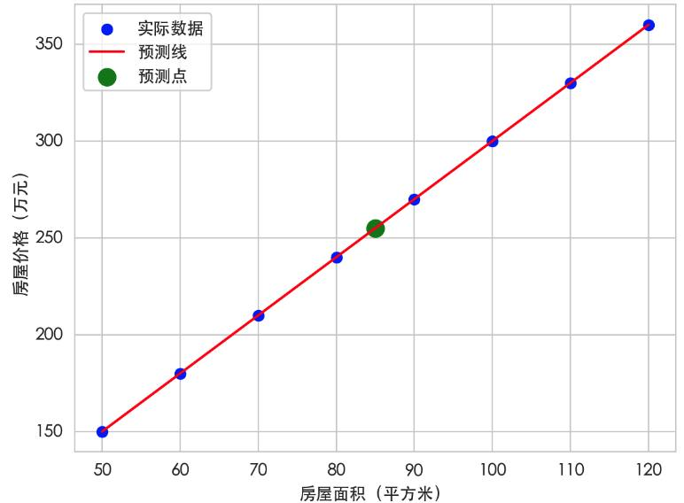
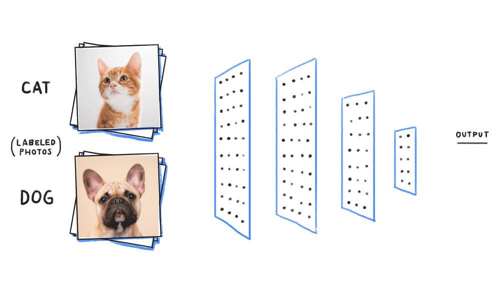
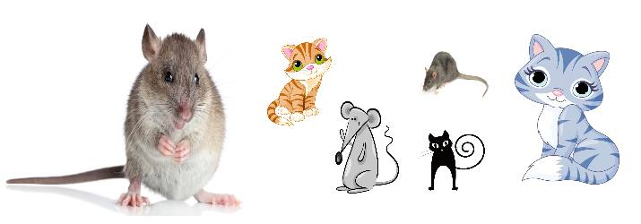
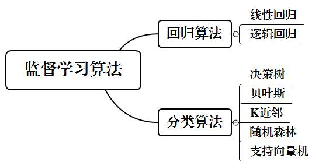
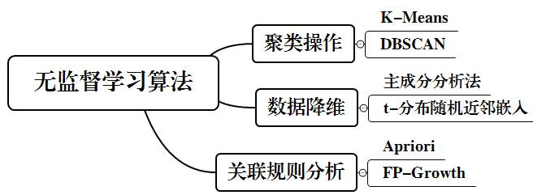

第 1 页 · 2 机器学习的学习类型
2 机器学习的学习类型

模块2：认识机器学习


第 2 页 · 用机器来预测

用机器来预测
房屋的价格
第 3 页 · 机器有哪些不同的学习方式？


机器有哪些不同的学习方式？
第 4 页 · 已知样本的鼠/猫分类
已知样本的鼠/猫分类
一、监督学习
监督学习，是指机器在有已知输入值xi和输出值y的经验数据（样本）的情况下开展的学习。

第 5 页 · 一、监督学习
一、监督学习
训练的数据有标签（Label）
1
学习特点
样本的特征和标签已知
2
学习的目的就是建立一个将输入准确映射到输出的模型
3

第 6 页 · 二、无监督学习
二、无监督学习
无监督学习，就是指机器在学习过程中不受监督，学习模型不断提高自我认知和不断巩固，最后进行自我归纳来达到学习目的。

如何分类
第 7 页 · 二、无监督学习
二、无监督学习
1
2
3
三种可能的分类结果
第 8 页 · 二、无监督学习
二、无监督学习
无须大量标注数据（Label）
1
学习特点
以更接近人类的学习方式不断自我发现、学习和调整
2

第 9 页 · 三、半监督学习
三、半监督学习
半监督学习，它同时使用少量有标签数据和大量无标签数据来训练模型的学习方式。
降低样本标注成本
1
学习优点
提升模型性能
2
采用半监督学习算法来训练识别猫狗
第 10 页 · 四、强化学习
四、强化学习
强化学习，一个机器（智能体）如何通过与环境进行持续地交互，在一系列动作和选择中，通过学习获得最优的策略，以最大化得到累积奖励。
在试错中反复学习
1
学习特点
以奖惩为信号调整行为
2
追求长期收益最大化
3
机器人通过强化学习走迷宫
第 11 页 · 四、强化学习
四、强化学习
智能体（学习者）
1
六大结构
环境（学习的环境）
2
状态（某时刻环境的情况）
3
动作（智能体的行为或操作）
4
奖励（环境给智能体的反馈）
5
策略（智能体的行为准则和动作决策）
6
第 12 页 · 寻找四大学习的应用场景
寻找四大学习的应用场景
列举四大机器学习方式的典型应用场景，填写下表。
| 机器学习方式 | 应用场景 | 按应用复杂度进行排序 |
| ①监督学习 | ||
| ②无监督学习 | ||
| ③半监督学习 | ||
| ④强化学习 |
第 13 页 · 学生分享及教师点评
学生分享及教师点评

| 分享要点 | 分值 | 计分 | 教师点评 |
| 1、你完成任务使用的主要工具？ | 10 | 合理使用AI工具 | |
| 2、与其他同学进行了怎样的充分讨论？ | 10 | 集思广益、团结协助 | |
| 3、请分别简述四大学习的应用场景 | 30 | 主动思考，善于总结 | |
| 4、你还了解机器学习有哪些其它的学习方式？ | 20 | 另辟蹊径，与众不同 | |
| 5、什么情况下该选择某种合适的学习方式？ | 20 | 举一反三，灵活应用 | |
| 6、其它（含逻辑、表情、主动、清晰、流畅、自信等） | 0-10 | 能说、亲和、善用、精技 |
第 14 页 · 子任务3：语音提示处理
子任务3：语音提示处理

学以致用
应用为王